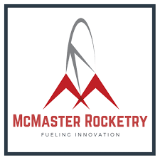
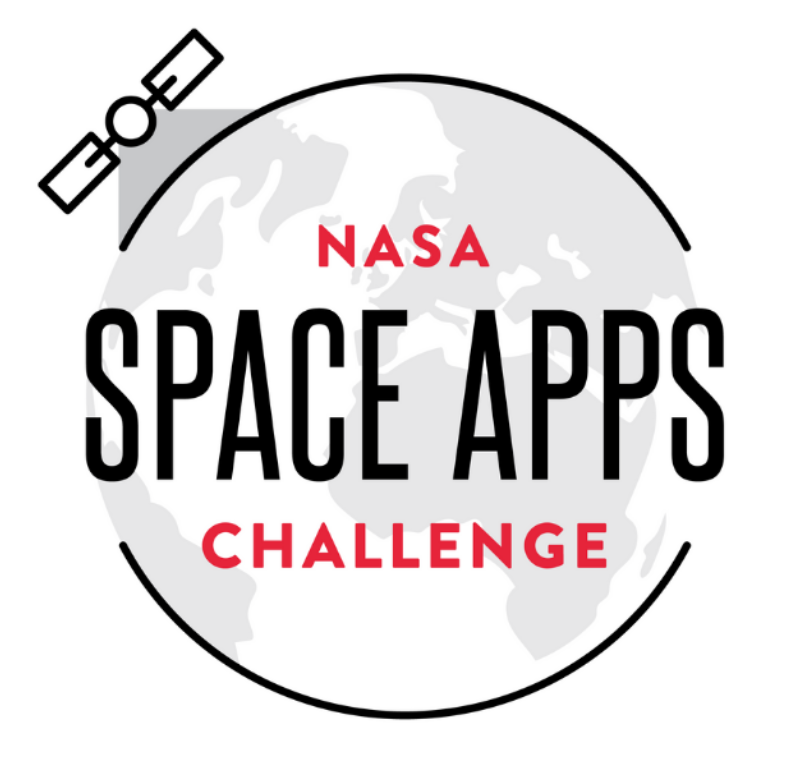
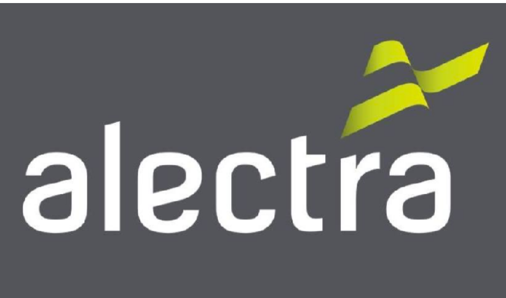
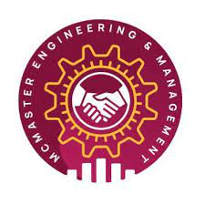
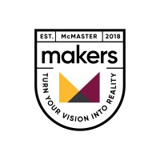
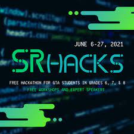

Pedal Control Board
In this project, the user will write their mood and using Jina AI, we matched the user with a song that they can resonate too.
In a galaxy pretty nearby…
As an engineer, I have one primary objective: To facilitate positive social impact with innovative creative solutions to pertinent problems.
I am an electrical engineering student at McMaster currently enrolled in my third year of a Bachelor's in Electrical Engineering and Management at McMaster University in Hamilton, Ontario. I aspire to explore all electrical engineering applications and strive to work as a hardware or firmware engineer.
I value working with other like-minded engineers in collaborative workspaces. I am a curious, goal-oriented, engineer who thrives off of new challenges and loves learning new topics.
Alongside my education in engineering, I enjoy exploring engineering in real-world contexts. I have previous experience working as a system controller during my co-op. I am also currently working with teams to build a solar power car and a rocket. In addition, I am constantly working on side projects to explore a wide range of aspects of electrical engineering
I am interested in working with technologies such as embedded systems, aerospace, avionics, control systems, vehicle development, artificial intelligence, chip design, and more.
I am excited to see what the future of technology holds and I aspire to make an impact in the landscape of engineering.
Work and Extra Cirrucular Experience
|

|
Rocketry |
I administer telemetry, avionics, data acquisition, power management, and GPS modules on printed circuit boards. I also continously document progress and devise methods for optimizing performance of the rocket. |
|---|
|
|
Solar Car |
I develop and submit schematics and layouts for printed circuit boards using CAD softwares to implement motor and power management systems. I ensure functionality by simulating, debugging and analyzing systems. |
|---|
|

|
Space Apps Challenge |
I created, managed, and implemented beneficial sponsorship programs involving sponsors to fund operations. I established strong relationships with sponsors and liaised with external vendors regarding sponsorship programs |
|---|
|

|
Alectra |
Assisted in managing, monitoring, and ensuring that the SCADA system for the south western power grid was up to date and accurate Delegated tasks to crews to resolve outages and electrical faults in Hamilton and St Catherines in a timely manner. |
|---|
|

|
Eng and Management Society |
Orchestrated events for 600+ engineering and management students such as alumni nights and case competitions. Helped market, organize, and remain in budget for events. |
|---|
|

|
McMaster Makers |
Coordinated 7 engineering based workshops and organized over 100 attendee’s information, venue, logistics etc. Drafted 7 reports which focused on trends, issues and areas of improvement to ensure better future workshops. |
|---|
|

|
SRHacks |
Mentored 15+ students from grade 6-8 and guided them through completing the assigned task for the hackathon. Judged 13+ projects by analyzing 8 criteria related to java, engineering, creativity, innovation and problem solving. |
|---|
A selection of my range of works and personal projects
In this project, the user will write their mood and using Jina AI, we matched the user with a song that they can resonate too.
In this project, the user will write their mood and using Jina AI, we matched the user with a song that they can resonate too.
In this project, the user will write their mood and using Jina AI, we matched the user with a song that they can resonate too.
DevpostThis web app accepts upto 5 recipes and uses python webscraping to generate a grocery list and emails it to the user
DevpostWe designed an drinking game with a twist on AutoDesk Inventor. Beer Gears creates normal beer pong with moving components.
Our client is an artist with mobility issues in her arms which makes it harder for her to comfortable paint for long periods. This project creates a solution in autodesk inventor.
Learn MoreIn this project, we created a vehicle for recylcing to travel in from a pick up station, to the correct bin
We programmed an arm to transport the container to the sterilization autoclave. I was responsible for transferring a randomly spawned container to the appropriate autoclave using muscle sensors with python on a raspberry pi
Technical and Non Technical Skills
I enjoy learning new softwares for different applications. I enjoy using Python for applications such as analyzing data, creating backends, and new applications. I used it in my hackathon projects Change My Tune and in a sudoku solver which used a backtracking. In addition, I use C++ and C in applications such as programming microcontrollers, or general programming. I also use HTML, CSS, JS, PHP and Git when creating the frontend and backend for websites such as this one. In addition, I use MATLAB for mathematical computations and simulations.
In many of my clubs and classes, I have done PCB Design with a wide range of functions. I have wired boards with Sensors, Power Management, Microcontrollers and more. I have experience Designing, Wiring, Simulating and Testing Boards. I design boards on programs such as Altium, Eagle, and Fusion 360. I have programmed microcontrollers with a Pickit using C++ and aspire to work more with embedded systems in the future. I have also worked with Verilog and HDLs in my classes and would enjoy working on them in real world contexts. I also have experience working with CAD with Autodesk Inventor and Solidworks
I believe the business aspect of my degree makes me a well-rounded engineer. It has improved my Oral and Written Communication skills and my ability to present and communicate my ideas to others. In addition, planning events for Space Apps and McMaster Engineering and Management Society has taught me a lot on Marketing, Sponsorship Outreach, and Cost Analysis. Furthermore, I have great Interpersonal and Customer Service skills from networking and working in retail.